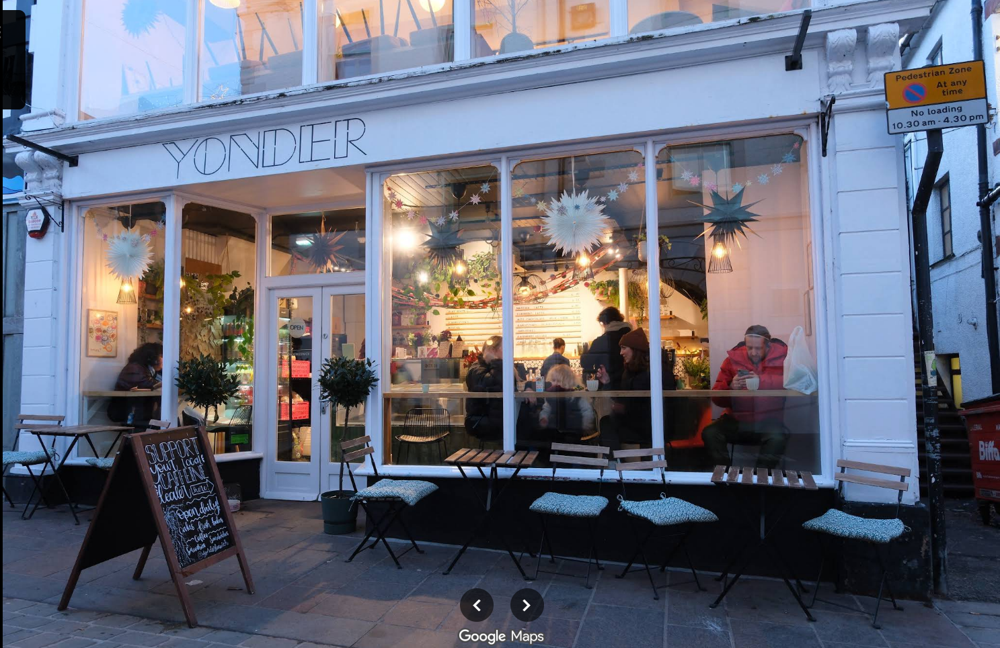
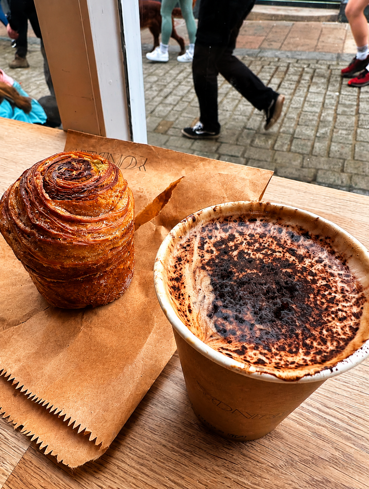
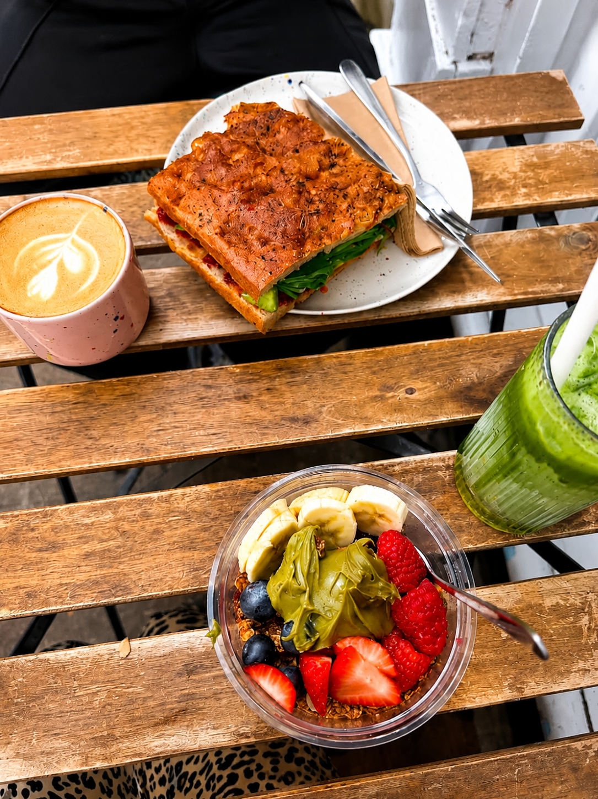
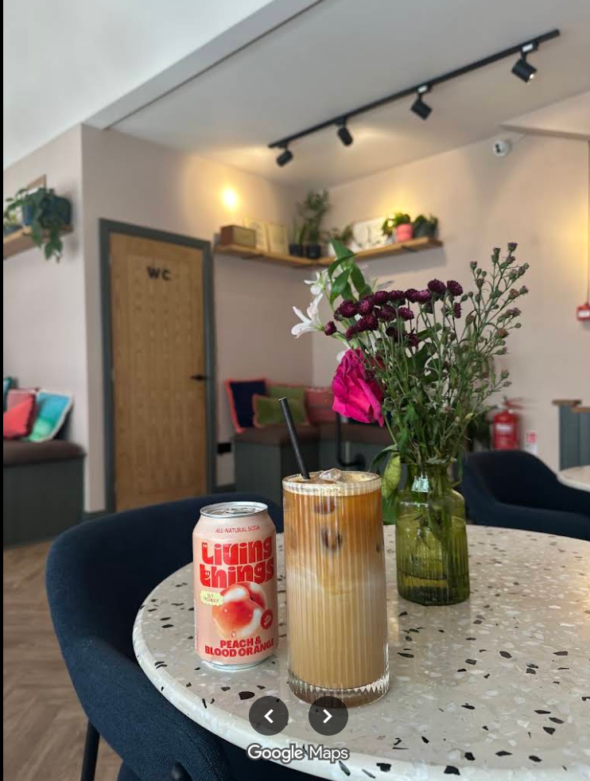
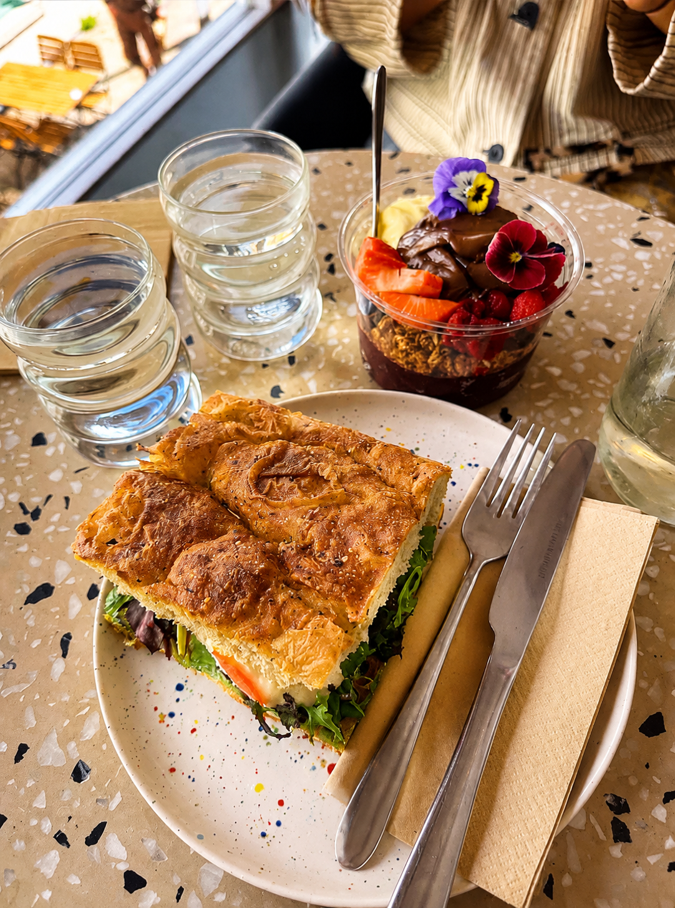
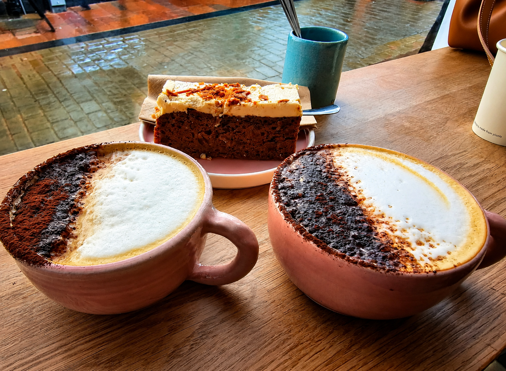

1 Main Street, Keswick, CA12 5BA
Mon–Fri 8:00–15:30 · Sat–Sun 8:00–16:00
Walk-ins Only
Yonder
Opened in July 2023 by Charlotte Williams, Yonder brings a slice of Australian café culture to Keswick. Inspired by Melbourne's vibrant coffee scene, it's a place where flat whites are taken seriously and every detail — from the playlist to the porcelain — has been considered.
We serve Red Bank Roasters, the best coffee in the Lakes. Whether you're fuelling up for a fell walk or settling in for brunch, you're always welcome.

Our Signature
Each drink at Yonder is crafted with care — from our signature pink Beetroot Latte to the cult-favourite Strawberry Iced Matcha. We use Red Bank Roasters espresso, Bare Bones single-origin chocolate, and house-made syrups. No syrups from a bottle, no corners cut.
Beetroot Latte · Strawberry Iced Matcha · Banana Bread Matcha · Turmeric Latte · Single-Origin Hot Chocolate
Opening Hours
Monday–Friday 8:00–15:30
Saturday–Sunday 8:00–16:00
Walk-ins Only · No Bookings
Mindful Miles
Our weekly community run club. Every Wednesday at 7am from the café. All paces welcome — run, coffee, connect.
Dog Friendly
Well-behaved pups are always welcome. Ask about our Pup Loyalty Board when you visit.
Gallery



